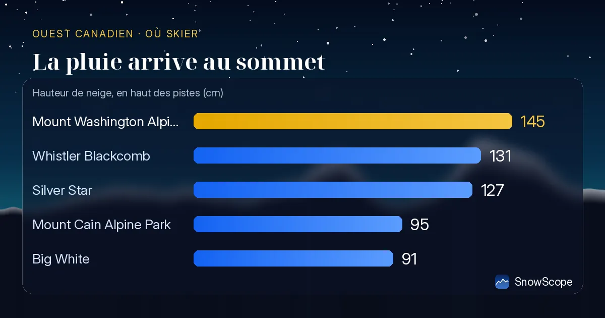
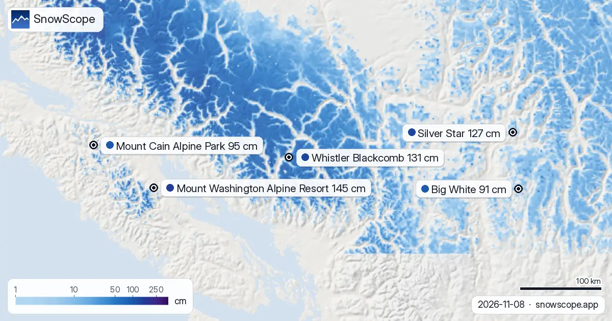

Mount Washington en tête avec 145 cm : la pluie arrive au sommet
Mount Washington Alpine Resort retient la neige la plus profonde de l'Ouest canadien avec 145 centimètres. Le 11 novembre, le niveau de congélation montera à 2 680 mètres minimum, montant bien au-dessus du sommet de 1 569 mètres et apportant la pluie aux terrains les plus élevés.
Consultez les prévisions neige en temps réel pour Mount Washington Alpine Resort sur l'application SnowScopeHauteurs de neige, alertes poudreuse et carte 3D, gratuitement.
La Hiérarchie
Mount Washington en tête avec une marge substantielle : 145 centimètres sur les pentes supérieures aujourd'hui. Whistler Blackcomb suit avec 131 centimètres, Silver Star avec 127 centimètres, Mount Cain Alpine Park avec 95 centimètres, et Big White avec 91 centimètres.
Ces classements reflètent l'accumulation saisonnière totale, pas l'accumulation récente. Mount Washington a reçu seulement 7 centimètres au cours des 72 dernières heures, tandis que Whistler a été frappée par 68 centimètres de neige le 8 novembre seul. La tête de Mount Washington persiste parce qu'elle a conservé la neige de début de saison — le résultat de conditions plus froides et de terrain élevé.
| Station | Hauteur de neige | Neige fraîche, 72 h | Attendu, jours suivants | Sommet |
|---|---|---|---|---|
| Mount Washington Alpine Resort | 145 cm | 7 cm | 7 cm | 1 569 m |
| Whistler Blackcomb | 131 cm | 100 cm | 62 cm | 2 259 m |
| Silver Star | 127 cm | 2 cm | 2 cm | 1 886 m |
| Mount Cain Alpine Park | 95 cm | 50 cm | 21 cm | 1 616 m |
| Big White | 91 cm | 3 cm | 2 cm | 2 271 m |

L'Augmentation du Niveau de Congélation
Un changement atmosphérique substantiel arrive en milieu de semaine. Le niveau de congélation à Mount Washington aujourd'hui varie de 1 420 à 1 480 mètres, bien en dessous du pic. Le 11 novembre, il augmentera à un minimum de 2 680 mètres et un maximum de 3 070 mètres.
Ce n'est pas un changement marginal ; cela signifie que la pluie enveloppera l'ensemble de la station du sommet à la base. Pour la neige de début de saison qui est mince et reposant sur un terrain exposé, cette transition a des conséquences réelles. Les implications sont criantes.

Vulnérabilité de la Neige Mince
SnowScope de neige révèle une fragilité cachée sous ces grands chiffres. Les 145 centimètres se groupent au sommet. À 1 569 mètres, le sommet retient environ 12 centimètres ; à mi-montagne (1 325 mètres), seulement 8 centimètres ; à la base (1 081 mètres), zéro.
Quand la pluie tombe sur ces couches minces, elle s'infiltre à travers elles, liant le manteau neigeux et le densifiant. La neige de début de saison repose souvent sur le sol nu ou des rochers dispersés. La pluie accélère le tassement et peut créer une croûte. Toute neige fraîche arrivant après aura du mal à se lier efficacement.
L'Avantage d'Altitude de Whistler
La plus grande altitude de Whistler Blackcomb offre une protection. Son sommet atteint 2 259 mètres ; le niveau de congélation minimum le 11 novembre est 2 170 mètres. Le haut touchera la pluie, mais la mi-montagne (1 456 mètres) se situe plus bas que le seuil.
Whistler a absorbé une neige récente formidable — 100 centimètres au cours des 72 dernières heures. Même où la pluie touche légèrement les élévations supérieures, les pentes mi-inférieures conservent une base plus épaisse. La combinaison d'une plus basse altitude de sommet et de profils de neige minces rend Mount Washington vulnérable sur toute sa verticale.
Calendrier et Transitions
Les précipitations fraîches arrivent les 10 et 11 novembre et passeront de pluie à neige en montant en altitude. Mount Washington devrait recevoir 7 centimètres au cours des prochains jours : 2 centimètres le 9 novembre (seuil de pluie), 5 centimètres le 10 novembre (mélangé ou neige au sommet), et 0 le 11 novembre (le système s'éloigne).
La fenêtre critique est le 10 novembre : la neige collera-t-elle aux pentes mouillées par la pluie ? Attendez-vous aux meilleures conditions aujourd'hui et demain ; les conditions se détérioreront significativement à l'arrivée de la pluie.
Tendance Régionale
La surface couverte de neige dans l'Ouest canadien se contracte. La région couvrait 333 810 kilomètres carrés le 6 novembre ; le 8 novembre, elle s'était réduite à 288 610 kilomètres carrés. Les prévisions appellent à une nouvelle baisse à 265 160 kilomètres carrés le 11 novembre.
Parmi les 57 stations de la région, 45 retiennent actuellement la neige ; 43 devraient la conserver d'ici le 11 novembre. Ce système réchauffe les montagnes et érode la surface couverte de neige, ne l'étendant pas. La fenêtre pour skier sur la neige de début de saison s'amenuise.
Conseils aux skieurs
- Privilégiez les pentes supérieures à Mount Washington aujourd'hui et demain, avant la pluie le 11 novembre.
- Les élévations basses et intermédiaires deviendront lourdes et mouillées ; restez en altitude.
- Whistler peut offrir des conditions plus stables grâce à une plus grande altitude et à la neige récente épaisse.
- Les surfaces le 11 novembre seront très variables ; attendez-vous à de la glace due aux cycles gel-dégel et à des plaques molles.
- Consultez le bulletin d'avalanche officiel lorsque vous skiez en hors-piste, en particulier après les phénomènes pluie-sur-neige.
À propos de ces chiffres
Les hauteurs de neige des stations sont la neige la plus épaisse sur le haut du domaine à la date indiquée ; ce sont des estimations pour une zone, pas une mesure en un point. Les prévisions peuvent changer. Consultez toujours le bulletin d'avalanche officiel avant le hors-piste.
Bulletins d'avalanche officiels: Avalanche Canada
Citer ce bulletin
Pour la recherche, l'enseignement ou la presse : chiffres et graphiques réutilisables librement sous CC BY 4.0 avec cette citation.
SnowScope (2026), Mount Washington en tête avec 145 cm : la pluie arrive au sommet, https://snowscope.app/blog/fr/2026/11/western-canada-mount-washington-alpine-resort-snow-depth-today-8-november-2026.html, consulté le 2026-11-08
SnowScope (Atlas Labs). (2026, November 8). Mount Washington en tête avec 145 cm : la pluie arrive au sommet. SnowScope snow reports. https://snowscope.app/blog/fr/2026/11/western-canada-mount-washington-alpine-resort-snow-depth-today-8-november-2026.html
BibTeX
@misc{snowscope2026westerncanadamountwashin,
author = {{SnowScope (Atlas Labs)}},
title = {Mount Washington en tête avec 145 cm : la pluie arrive au sommet},
year = {2026},
month = nov,
howpublished = {\url{https://snowscope.app/blog/fr/2026/11/western-canada-mount-washington-alpine-resort-snow-depth-today-8-november-2026.html}},
note = {Published 2026-11-08 21:52 UTC; accessed 2026-11-08}
}· CC BY 4.0 · Méthodes, données et outils →
Suivre Mount Washington Alpine Resort
Gratuit : un message quand la neige arrive, et la météo chaque matin.